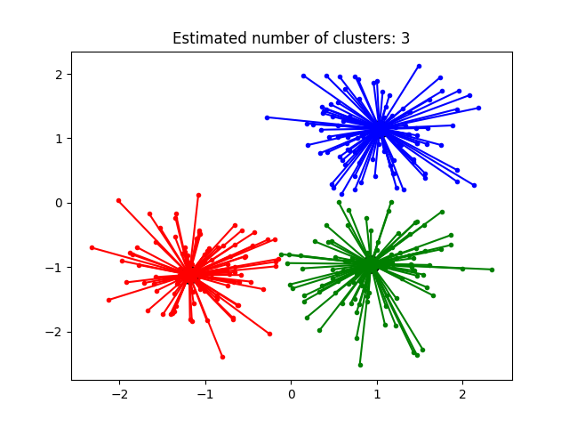

Note
Click here to download the full example code or run this example in your browser via Binder
Demo of affinity propagation clustering algorithm¶
Reference: Brendan J. Frey and Delbert Dueck, “Clustering by Passing Messages Between Data Points”, Science Feb. 2007
Out:
Estimated number of clusters: 3
Homogeneity: 0.872
Completeness: 0.872
V-measure: 0.872
Adjusted Rand Index: 0.912
Adjusted Mutual Information: 0.871
Silhouette Coefficient: 0.753
print(__doc__)
from sklearn.cluster import AffinityPropagation
from sklearn import metrics
from sklearn.datasets.samples_generator import make_blobs
# #############################################################################
# Generate sample data
centers = [[1, 1], [-1, -1], [1, -1]]
X, labels_true = make_blobs(n_samples=300, centers=centers, cluster_std=0.5,
random_state=0)
# #############################################################################
# Compute Affinity Propagation
af = AffinityPropagation(preference=-50).fit(X)
cluster_centers_indices = af.cluster_centers_indices_
labels = af.labels_
n_clusters_ = len(cluster_centers_indices)
print('Estimated number of clusters: %d' % n_clusters_)
print("Homogeneity: %0.3f" % metrics.homogeneity_score(labels_true, labels))
print("Completeness: %0.3f" % metrics.completeness_score(labels_true, labels))
print("V-measure: %0.3f" % metrics.v_measure_score(labels_true, labels))
print("Adjusted Rand Index: %0.3f"
% metrics.adjusted_rand_score(labels_true, labels))
print("Adjusted Mutual Information: %0.3f"
% metrics.adjusted_mutual_info_score(labels_true, labels))
print("Silhouette Coefficient: %0.3f"
% metrics.silhouette_score(X, labels, metric='sqeuclidean'))
# #############################################################################
# Plot result
import matplotlib.pyplot as plt
from itertools import cycle
plt.close('all')
plt.figure(1)
plt.clf()
colors = cycle('bgrcmykbgrcmykbgrcmykbgrcmyk')
for k, col in zip(range(n_clusters_), colors):
class_members = labels == k
cluster_center = X[cluster_centers_indices[k]]
plt.plot(X[class_members, 0], X[class_members, 1], col + '.')
plt.plot(cluster_center[0], cluster_center[1], 'o', markerfacecolor=col,
markeredgecolor='k', markersize=14)
for x in X[class_members]:
plt.plot([cluster_center[0], x[0]], [cluster_center[1], x[1]], col)
plt.title('Estimated number of clusters: %d' % n_clusters_)
plt.show()
Total running time of the script: ( 0 minutes 0.501 seconds)